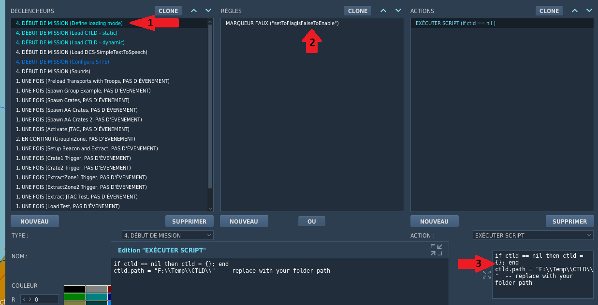
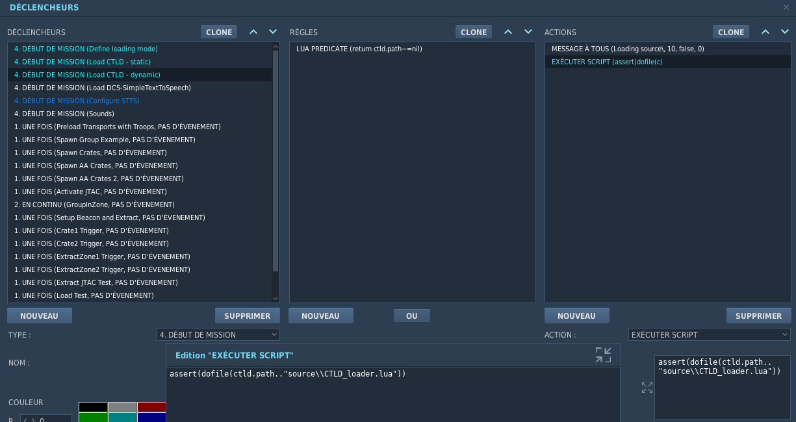

CTLD v2 — Developer Guide¶
1. Repository structure¶
src/ Source modules (OOP, one class per file)
lib/ Shared micro-libraries (class.lua, objectRegistry, parachute)
scenes/ Scene data files (auto-registered at load time)
compat/ Legacy v1 API wrappers (thin delegates, deprecated)
source/ Reference — original monolithic v1 CTLD.lua (read-only)
tools/
merger/ Build tooling: merge src/ → CTLD.lua
tests/ busted unit tests (no DCS required)
helpers/ DCS stubs + module loader
specs/ *_spec.lua test files
tests/dcs/ Witchcraft integration tests (requires live DCS mission)
docs/ This guide + missionmaker_guide.md + specs/
assets/ Audio files (beacon.ogg)
missions/ Demo and test .miz files
2. Architecture overview¶
CTLD v2 uses a singleton manager pattern: one manager per domain, each
accessed via Manager.getInstance(). Managers communicate exclusively through
the internal event bus EventDispatcher.
CTLDCoreManager ← orchestrator, owns init sequence
CTLDPlayerManager ← tracks connected players, owns F10 menu
CTLDZoneManager ← pickup / extract / waypoint zones
CTLDTroopManager ← troops boarding / deploying / extracting
CTLDCrateManager ← crate spawn / load / unload / assembly
CTLDVehicleSpawner ← vehicle request / pack
CTLDFOBManager ← FOB construction pipeline
CTLDBeaconManager ← radio beacons
CTLDJTACManager ← JTAC auto-lase / orbit
CTLDReconManager ← recon layer + F10 map marks
CTLDCrateAssemblyManager ← AA system assembly
CTLDSceneManager ← scene engine (FARP, FOB, minefield…)
CTLDDCSEventBridge ← single DCS event handler, routes to managers
CTLDPlayerTracker ← player connect/disconnect tracking (no MIST)
Configuration is read-only via ctld.gs("paramName") — never call
config:getSetting() directly.
Public API quick-reference for all managers: docs/api-reference.md
Troop + JTAC lifecycle state machine — complete diagram with all states, transitions, and JTAC instance management: docs/assets/troops_jtac_lifecycle.svg
{kind=link}
CTLDCoreManager init sequence¶
CTLDCoreManager:init() runs once at mission start and executes these phases in order:
| Phase | Method | Description |
|---|---|---|
| INIT-B | _initMMCrates() |
Scan coalition statics for MM-placed cargo objects |
| INIT-C | _initMMJTACs() |
Scan coalition groups for MM-placed JTAC groups |
| INIT-D | CTLDVehicleSpawner:scanMMVehicles() |
Scan coalition ground groups for MM-placed vehicles |
| INIT-E | _initExtractableGroups() |
Register extractableGroups names into CTLDTroopManager._droppedGroups |
| INIT-A | _initAITransports() |
Build AI team lists and start the auto-pickup/dropoff loop |
INIT-E detail: reads ctld.gs("extractableGroups"), calls Group.getByName() for each entry, inserts the group name into CTLDTroopManager._droppedGroups[coalition]. Groups not found are logged as WARN and skipped. No late-activation (iso-legacy). No _droppedTemplates entry — embarkFromField uses 130 kg/unit fallback.
3. Adding a new module¶
- Create
src/CTLD_mymodule.luausing the class pattern:
local CTLDMyManager = createClass("CTLDMyManager")
CTLDMyManager._instance = nil
function CTLDMyManager.getInstance()
if not CTLDMyManager._instance then
CTLDMyManager._instance = CTLDMyManager:new()
CTLDMyManager._instance:init()
end
return CTLDMyManager._instance
end
function CTLDMyManager:init()
-- setup
end
- Add the filename to
tools/build/listToMerge.txtin dependency order. - Update
tests/helpers/loader.luawith the samedofileline. - Write busted specs in
tests/specs/mymodule_spec.lua.
4. Events¶
Publish:
EventDispatcher.getInstance():publish("OnMySomethingHappened", {
unitName = "...",
coalition = coalition.side.BLUE,
})
Subscribe (from another manager or external script):
EventDispatcher.getInstance():subscribe("OnMySomethingHappened", function(evt)
-- evt.unitName, evt.coalition
end)
Full event catalogue: docs/specs/CTLD_Events.md
5. Scene engine¶
CTLDSceneManager executes time-sequenced deployments of DCS statics and ground groups. It is the backend for all FARP, FOB, and minefield operations.
5.1 Internal data model¶
CTLDScene (one per active deployment)
├── _model : scene model table (steps, name, fobCompatible, onRepack…)
├── _params : runtime context { unit, coalition, farpName, repackData, … }
├── _spawnedObjects : [{ obj=DCSStatic, category=… }, …] (all objects spawned so far)
└── _stepIndex : current step pointer
CTLDSceneManager (singleton)
├── _active[sceneName] : CTLDScene instances currently deployed
└── _models[sceneName] : registered model tables
CTLDSceneManager._active is reset on every CTLD re-injection (Witchcraft dev cycle). Scene instances only survive a full mission restart.
5.2 Step execution¶
The step machine runs via timer.scheduleFunction. Each step:
- Resolves position from
polaroraxisfields relative to the snapshot heading/position captured at unpack time. - Spawns the DCS object via
coalition.addStaticObject(for statics) orcoalition.addGroup. - Stores the spawned reference in
_spawnedObjects. - Calls the optional
func(ctx)callback wherectx = { unit, scene, step, spawnedObj }. - Schedules the next step after
step.delayAfterPreviousStepseconds.
5.3 FARP Repack flow¶
Player selects "Pack Equipt → Pack [FARP]"
└── CTLDCrateManager:refreshPackEquiptSection()
└── CTLDSceneManager:findNearbyRepackableScenes(pos, 300)
└── returns scenes where _model.onRepack ~= nil
└── per scene: CTLDSceneManager:packScene(scene, transport, playerObj)
1. scene._model.onRepack(scene, repackData) ← snapshot warehouse
2. scene:destroy() ← remove all spawnedObjects
3. CTLDCrateManager:spawnCratesForScene(desc, pos)
└── crate.metadata.repackData = repackData
4. CTLDSceneManager._active[name] = nil
On crate unpack at new site:
└── CTLDCrateManager:_spawnUnpacked()
└── desc.unit matches a scene name → CTLDSceneManager:executeScene(model, unit, params)
└── params.repackData = crate.metadata.repackData (carried from crate)
└── warehouse step reads ctx.scene._params.repackData to restore fuel
5.4 Adding a new scene (dev checklist)¶
- Create
src/scenes/CTLD_myScene.lua— model table +CTLDSceneManager.getInstance():registerSceneModel(myScene)at the bottom. - Add the file to
tools/build/listToMerge.txt. - Declare a crate in
CTLD_userConfig.luawithunit = "My Scene Name". - If the scene deploys a DCS Invisible FARP: add a func-only step at the end to call
w:setLiquidAmount(type, qty)usinggetLiquidAmount(notgetLiquid). - If repack support is needed: implement
myScene.onRepack(scene, repackData)readingw:getLiquidAmount(type). - Add
fobCompatible = trueif the scene should also be spawnable as a FOB.
See src/scenes/CTLD_countrysideFarpScene.lua for a complete reference implementation.
6. Crate spawn pipeline¶
All crate unpack outcomes (ground vehicle, air JTAC, future static) go through a single three-step pipeline in CTLDCrateManager:
_spawnUnpacked(desc, pos, coa, cId, playerName)
├── desc.isJTAC → CTLDJTACManager:_consumeJTACSlot(coa) ← quota gate (definitive)
│ └── limit reached → notify player + return (no spawn)
├── ctld.utils.buildGroupUnitDef(desc, pos, gname, gid, uid)
│ ├── spawnAs == "GROUND" → minimal {name, task, units[{x,y,heading}]}
│ └── spawnAs == "AIRPLANE" → full {groupId, units[{alt,speed}], route[orbit+EPLRS]}
│ (orbit + EPLRS embedded only when isJTAC = true)
├── ctld.utils.spawnFromDescriptor(desc, countryId, unitDef)
│ ├── spawnAs == "STATIC" → coalition.addStaticObject
│ └── otherwise → coalition.addGroup(Group.Category[spawnAs])
└── _dispatchPostSpawn(desc, gname)
└── isJTAC = true → CTLDJTACManager:startLase(gname)
Key rules:
- coalition.addGroup and coalition.addStaticObject must only be called via ctld.utils.spawnFromDescriptor — never directly.
- ctld.utils.buildGroupUnitDef is the single builder for GROUND and AIR unitDefs. STATIC objects have a separate schema and go directly to addStaticObject.
- Post-spawn role activation belongs exclusively in _dispatchPostSpawn. Do not add role logic elsewhere in the unpack path.
- CTLDJTACManager:deployAirJTAC (legacy/script entry point) also routes through buildGroupUnitDef + spawnFromDescriptor.
- JTAC quota (JTAC_LIMIT_RED/BLUE) is consumed before spawn in _spawnUnpacked (crate path) and in spawnJTACFromDescriptor (Request Equipment path). The quota is definitive — it is never refilled when a JTAC is killed. MM JTACs and infantry JTAC soldiers do not consume the quota.
Crate descriptor fields driving the pipeline:
| Field | Effect on pipeline |
|---|---|
spawnAs (string, default "GROUND") |
Selects addGroup category or addStaticObject |
isJTAC (boolean) |
Source of truth for JTAC role. Adds orbit route to air unitDef; triggers startLase post-spawn. The unit type name (unit) is NOT used for JTAC detection anywhere in the OOP stack. |
specificParams (table, air only) |
Orbit tuning passed to startLase / deployAirJTAC: speed, alti, orbitRadiusNoLase, orbitRadiusOnLase |
cratesRequired (number) |
Guards unpack — must be met before pipeline runs |
showSets (boolean, default true) |
When false, suppresses the auto-generated "All crates" singleTypeSet menu entry for this crate even if enableAllCrates = true |
JTAC detection rules (summary — do not invert):
| Context | Rule |
|---|---|
| Request Equipment menu population | CTLDCrateManager:getJTACDescriptors(coalition) — iterates _processedCrates, returns all singleCrate entries with isJTAC=true for the player's coalition (or side=nil). No separate type list. |
| Request Equipment spawn | CTLDVehicleSpawner:spawnJTACFromDescriptor(desc, spawner, zone) — quota check → ground: spawnVehicleForTransport+startLase; air: deployAirJTAC |
| Post-unpack activation | _dispatchPostSpawn: if desc.isJTAC → CTLDJTACManager:startLase() |
| Pre-placed MM group detection | Group name contains "jtac" (case-insensitive) — unit type not used |
| Troop deploy with JTAC soldier | tmpl.hasJtac == true (computed from jtac > 0 in template) → startLase after deploy |
Do not add new JTAC detection paths. If a new unit type needs JTAC behaviour, add
isJTAC=trueto its crate descriptor — never add it to a type-name list. Do not add a separate type list.JTAC_unitTypeNameshas been removed — the crate catalogue is the single source of truth for both the crate menu and the Request Equipment menu.
spawnableCrates internal processing¶
CTLDCrateManager:_processSpawnableCrates() runs once at getInstance() time and transforms the raw spawnableCrates config into an internal structure used by the menu builder and all descriptor lookups.
Three-pass algorithm:
- Pass 1 — separation: iterates
ipairs(category)and routes each entry intosingleCrates(hasweightfield) ormixedSets(hasmixedSetfield). Entries with neither are logged and skipped. - Pass 2 — singleTypeSet generation: for each singleCrate with
cratesRequired > 1, whenenableAllCrates = trueandsc.showSets ~= false, creates a virtualsingleTypeSet = { multiple={w,w,...}, desc=sc.desc.." - "..ctld.tr("All crates"), ... }stored adjacent to its parent. The suffix is i18n-aware. - Pass 3 — mixedSet validation: for each mixedSet, checks every weight against
catWeightIdx(per-category index). Any unresolved weight marks the entire mixedSet as invalid (excluded from menu) and queues a startup MM warning viatrigger.action.outText.
Stored results:
self._processedCrates[category] = { singleCrates=[{singleCrate, singleTypeSet?},...], mixedSets=[...] }self._weightIndex[weight] = descriptor— O(1) lookup for allfindDescriptorBy*methods (singleCrates only; mixedSets have noweightfield).
Menu rendering order (refreshRequestEquipmentSection): for each category, iterates data.singleCrates (each followed immediately by its singleTypeSet if visible), then data.mixedSets. Coalition/JTAC filtering applied per player at render time. crateOrder counter ensures _sortByOrder produces a stable, deterministic sequence.
7. Build¶
Local (Windows):
powershell -ExecutionPolicy Bypass -File tools/build/merge_CTLD.ps1
CTLD.lua at repo root (gitignored). UTF-8 without BOM (required by DCS).
CI (GitHub Actions): automatic on push — see .github/workflows/ci.yml.
7.1 Dynamic loading in DCS mission (dev workflow)¶
By default, CTLD.lua must be embedded inside the .miz archive (as a DO SCRIPT FILE action). Re-embedding after each build is tedious during active development. The dynamic loading pattern avoids this: DCS reads CTLD.lua directly from a local path on disk at mission start via dofile(), so only a rebuild is needed — no .miz re-packaging.
This is a developer-only setup. Do not ship
.mizfiles to players with dynamic loading enabled — they would need the file at the same local path on their machine.
Trigger setup¶
Add three MISSION START triggers in the DCS Mission Editor, in this order:
Trigger 1 — "Define loading mode"¶
- Type:
MISSION START - Condition:
FLAG IS FALSE (setToFlagIsFalseToEnable)— fires when the flag is in its default false state - Action:
DO SCRIPT
if ctld == nil then ctld = {}; end
ctld.path = "F:\\Temp\\CTLD\\" -- replace with your local repo/build folder
This sets ctld.path. The flag setToFlagIsFalseToEnable acts as a toggle: leave it false for dynamic load; set it to true in mission triggers to disable dynamic loading and fall back to static.
Trigger 2 — "Load CTLD - static"¶
- Type:
MISSION START - Condition:
LUA PREDICATE (return ctld == nil or ctld.path == nil) - Action:
DO SCRIPT FILE→ embeddedCTLD.lua
This fires only when ctld.path is not set — i.e., when dynamic loading is disabled. It loads the version baked into the .miz.
Trigger 3 — "Load CTLD - dynamic"¶
- Type:
MISSION START - Condition:
LUA PREDICATE (return ctld.path ~= nil) - Actions:
MESSAGE TO ALL—"Loading CTLD from disk..."(optional, 10 s)DO SCRIPT
assert(dofile(ctld.path.."CTLD.lua"))
This fires only when ctld.path is defined and loads CTLD.lua directly from disk.
Screenshots¶

Trigger 1: sets
ctld.path. Trigger 3 (dynamic) is visible in the left panel.

Trigger 3: LUA PREDICATE on
ctld.path ~= nil→dofile(ctld.path.."CTLD.lua").
Dev cycle¶
1. Edit src/
2. Run build → CTLD.lua updated on disk
3. Restart mission in DCS → dofile() picks up new version automatically
4. No .miz re-packaging needed
8. Testing¶
For the full release procedure (who runs what and when), see
docs/recette-procedure.md.
This section covers the technical rules for running tests locally.
8.1 busted (L1/L2 — no DCS)¶
# Install (one-time)
luarocks install busted
# Run all tests
busted tests/
# Run only functional specs
busted tests/functional/
# Run a single spec
busted tests/functional/troop_manager_spec.lua
The .busted config (repo root) sets pattern = "_spec" and loads
tests/helpers/init.lua before every spec. All DCS API calls are stubbed in
tests/helpers/dcs_stubs.lua.
8.2 Witchcraft (L3/L4 — live DCS)¶
Witchcraft is a Node.js bridge that injects Lua scripts into a running DCS mission.
Injection command:
node "%USERPROFILE%/.vscode-dcs-tools/bridge.js" "<absolute_path_to_script.lua>"
VS Code shortcut: Shift+Ctrl+B → DCS-Witchcraft: Execute Global.
Prerequisites before any injection:
- If
src/was modified, rebuild first:
powershell -ExecutionPolicy Bypass -File "tools\build\merge_CTLD.ps1"
- Inject
CTLD.lua. - Wait 3–5 seconds for CTLD initialization to complete before injecting any test script.
8.3 CTLD.log setup¶
CTLD.log is only created when ctldLogPath is defined in the mission.
Set it in the mission's MISSION START trigger (DO SCRIPT):
ctldLogPath = "C:/Users/<you>/Desktop/CTLD.log"
This is a local path, never committed. Without it, log output goes to DCS.log only.
8.4 Debug configuration¶
local cfg = CTLDConfig.get()
cfg.settings["debug"] = true -- activates CTLD.log output
cfg.settings["debugScreenLog"] = true -- echoes all log() calls on screen
cfg.settings["debugScreenLogDuration"] = 20 -- screen display duration (seconds)
Do not use ctld.debug = true alone — it does not activate CTLD.log.
8.5 Test script output format¶
All tests/dcs/noPlayer/F-xxx.lua and tests/dcs/noPlayer/*.lua scripts
produce this format:
[F-033 PASS] guard inactive zone → false
[F-033 FAIL] success troops loaded expected=true got=false
[F-033 RESULT] pass=8 fail=1
Success criterion: fail=0 in the result line, no [FAIL] lines in CTLD.log.
8.6 Cleanup between test runs¶
If CTLD is already active in the mission, inject the cleanup script before re-injecting
CTLD.lua:
node bridge.js "tests/dcs/dev/shutdown_ctld.lua"
Each functional test script calls ctld_test.cleanup() internally for its own scope —
the full shutdown is only needed between full CTLD reloads.
9. Migration v1 → v2¶
7.1 Wrapper principle¶
All 22 v1 global functions (ctld.spawnGroupAtTrigger, ctld.JTACAutoLase,
etc.) are preserved as thin wrappers in src/legacy/legacy_api.lua. Each
wrapper:
- Calls the equivalent v2 manager method
- Logs a deprecation warning to ctld.log
No behaviour change — existing missions continue to work unchanged.
7.2 Migration table¶
| v1 call | v2 equivalent |
|---|---|
ctld.spawnGroupAtTrigger(name, zone, side) |
CTLDTroopManager.getInstance():spawnGroupAtTrigger(name, zone, side) |
ctld.spawnGroupAtPoint(name, point, side) |
CTLDTroopManager.getInstance():spawnGroupAtPoint(name, point, side) |
ctld.preLoadTransport(unit, group) |
CTLDTroopManager.getInstance():preLoadTransport(unit, group) |
ctld.unloadTransport(unit) |
CTLDTroopManager.getInstance():unloadTransport(unit) |
ctld.loadTransport(unit, group) |
CTLDTroopManager.getInstance():loadTransport(unit, group) |
ctld.unloadInProximityToEnemy(unit) |
CTLDTroopManager.getInstance():unloadInProximityToEnemy(unit) |
ctld.activatePickupZone(zone) |
CTLDZoneManager.getInstance():activatePickupZone(zone) |
ctld.deactivatePickupZone(zone) |
CTLDZoneManager.getInstance():deactivatePickupZone(zone) |
ctld.changeRemainingGroupsForPickupZone(zone, n) |
CTLDZoneManager.getInstance():changeRemainingGroups(zone, n) |
ctld.activateWaypointZone(zone) |
CTLDZoneManager.getInstance():activateWaypointZone(zone) |
ctld.deactivateWaypointZone(zone) |
CTLDZoneManager.getInstance():deactivateWaypointZone(zone) |
ctld.createExtractZone(name, pt, r, side) |
CTLDZoneManager.getInstance():createExtractZone(name, pt, r, side) |
ctld.removeExtractZone(zone) |
CTLDZoneManager.getInstance():removeExtractZone(zone) |
ctld.countDroppedGroupsInZone(zone) |
CTLDZoneManager.getInstance():countDroppedGroupsInZone(zone) |
ctld.countDroppedUnitsInZone(zone) |
CTLDZoneManager.getInstance():countDroppedUnitsInZone(zone) |
| (new) | CTLDZoneManager.getInstance():deactivateLogisticZone(name) |
| (new) | CTLDZoneManager.getInstance():activateLogisticZone(name) |
ctld.cratesInZone(zone) |
CTLDCrateManager.getInstance():startCrateCountWatcher(zone) |
ctld.spawnCrateAtZone(type, zone, side) |
CTLDCrateManager.getInstance():spawnCrateAtZone(type, zone, side) |
ctld.spawnCrateAtPoint(type, pt, side) |
CTLDCrateManager.getInstance():spawnCrateAtPoint(type, pt, side) |
ctld.createRadioBeaconAtZone(zone, side, freq, mod) |
CTLDBeaconManager.getInstance():createAtZone(zone, side, freq, mod) |
ctld.JTACAutoLase(group, code, smoke) |
CTLDJTACManager.getInstance():autoLase(group, code, smoke) |
ctld.JTACStart(unit, code, smoke) |
CTLDJTACManager.getInstance():startLase(unit, code, smoke) |
ctld.JTACAutoLaseStop(group) |
CTLDJTACManager.getInstance():stopAutoLase(group) |
7.3 Replacing ctld.addCallback¶
v1 used a single catch-all callback:
-- v1
ctld.addCallback(function(event)
if event.id == ctld.events.S_EVENT_CRATE_SPAWNED then
-- handle
end
end)
v2 uses targeted subscriptions:
-- v2
EventDispatcher.getInstance():subscribe("OnCrateSpawned", function(evt)
-- evt.crateName, evt.coalition, evt.spawnedBy, evt.position
end)
Benefits: no if/elseif chain, only the relevant handler fires, multiple
subscribers supported per event.
7.4 Complete migration example¶
v1 DO SCRIPT:
ctld.spawnGroupAtTrigger("Alpha Squad", "LZ_NORTH", coalition.side.BLUE)
ctld.JTACAutoLase("ENEMY_ARMOUR", 1688, true)
ctld.addCallback(function(e)
if e.id == ctld.events.S_EVENT_TROOPS_DEPLOYED then
trigger.action.outText("Troops landed!", 10)
end
end)
v2 equivalent:
local tm = CTLDTroopManager.getInstance()
local jtac = CTLDJTACManager.getInstance()
local ed = EventDispatcher.getInstance()
tm:spawnGroupAtTrigger("Alpha Squad", "LZ_NORTH", coalition.side.BLUE)
jtac:autoLase("ENEMY_ARMOUR", 1688, true)
ed:subscribe("OnTroopsDeployed", function(evt)
trigger.action.outText("Troops landed!", 10)
end)
7.5 Pack vehicle (new in v2)¶
v1 had no functional pack vehicle. v2 implements:
-- Find packable vehicles near a transport
local vehicles = CTLDVehicleSpawner.getInstance():findPackableVehicles(transportUnit)
-- Pack one (destroys the vehicle, spawns crates)
CTLDVehicleSpawner.getInstance():packVehicle(transportName, vehicleName, playerObj)
The F10 "Pack Vehicle" submenu is populated automatically when the transport lands near a packable vehicle.
10. Internationalisation (i18n)¶
8.1 How it works¶
- All user-facing strings are declared via
ctld.tr("English key"). - The active language is set in
src/CTLD_i18n.lua(ctld.i18n_lang). - Dictionaries live in separate files:
CTLD_i18n_en.lua,CTLD_i18n_fr.lua,CTLD_i18n_es.lua,CTLD_i18n_ko.lua. - Fallback chain: active lang → EN → key itself (never returns nil/empty).
8.2 Adding a new key¶
- Add
ctld.tr("My new text")in the source file. - Add the entry to
src/CTLD_i18n_en.lua(key = value for EN). - Bump
translation_versioninCTLD_i18n_en.lua. - Run
tools/build/generate_i18n_dicts.ps1— it propagates the new key (with EN value as placeholder) to all other language files and regenerates the merged loader. - Translators fill in the placeholder values in their language file.
8.3 Adding a new language¶
- Copy
src/CTLD_i18n_en.luatosrc/CTLD_i18n_XX.lua. - Translate all values (keep keys identical to EN).
- Add
CTLD_i18n_XX.luatotools/build/listToMerge.txt. - Add
ctld.i18n_lang = "XX"as an option insrc/CTLD_i18n.lua. - Regenerate: run
generate_i18n_dicts.ps1.
8.4 Translator audit API¶
These functions let scripts and tests detect gaps between EN and a target language
without writing to env.*.
ctld.i18n_audit(language)
---@param language string Language code, e.g. "fr"
---@return table|nil result { version_match=bool, en_version=str,
-- lang_version=str, missing={}, untranslated={} }
---@return string|nil err Non-nil when the language is unknown
local result, err = ctld.i18n_audit("fr")
if err then
-- language not loaded
else
if not result.version_match then
-- EN bumped; FR needs update
end
-- result.missing : keys present in EN but absent in FR
-- result.untranslated : keys where FR value == EN value (not translated)
end
ctld.i18n_auditAll()
Runs ctld.i18n_audit() on every loaded non-EN language.
local results = ctld.i18n_auditAll()
-- results["fr"], results["es"], results["ko"] — each is an audit result table
for lang, r in pairs(results) do
print(lang, "#missing=" .. #r.missing, "#untranslated=" .. #r.untranslated)
end
ctld.i18n_check(language, verbose) (legacy — DCS only)
Logs errors and warnings directly to env.*. Not suitable for assertions.
Use ctld.i18n_audit() in tests and scripts.
8.5 Mission-maker overrides (ctld.i18n_overrides)¶
ctld.i18n_overrides is never set inside src/. It is a mission-maker configuration variable, declared in CTLD_userConfig.lua (the .miz-side config file):
-- In CTLD_userConfig.lua (inside the .miz, not in src/)
ctld.i18n_overrides = {
fr = {
["Troops loaded"] = "Soldats embarqués",
},
en = {
["Troops loaded"] = "Troops on board",
},
}
Runtime sequence:
1. CTLD.lua loads → dictionaries populated:
ctld.i18n["en"]["Troops loaded"] = "Troops loaded"
ctld.i18n["fr"]["Troops loaded"] = "Troupes chargées"
2. CTLD_userConfig.lua runs → sets ctld.i18n_overrides
3. CTLDi18n.getInstance() called → _init() iterates ctld.i18n_overrides
and overwrites matching dict entries in memory
4. ctld.tr("Troops loaded") returns the overridden value
The distinction from generate_i18n_dicts.ps1 (build-time): that script
synchronises the CTLD_i18n_XX.lua dictionary files in src/. Overrides
are a runtime mechanism — they never touch the source files.
Overrides are applied once at startup by CTLDi18n:_init() and are
not reset between calls to ctld.tr().
11. Troop + JTAC lifecycle¶
9.1 Troop group state machine¶
A CTLDTroopGroup instance tracks troops from load to final disposal. It is not a DCS object — it lives entirely in Lua memory.
TRZ_LOADED ──embarkFromTroopZone()───────────────────────────────→ DEPLOYED
│ │
│ (DCS group: never spawned) │ (DCS group: spawned)
│ _aliveUnits + _jtacUnits memorised │ _aliveUnits = live DCS units
│ │ _jtacUnits map populated on 1st disembark
│ │
│ ↓
│ embarkFromField()
│ │
│ ↓
│ returnToTroopZone() │ FIELD_LOADED
│ │ │
│ ↓ ↓
│ RETURNED_TO_TRZ DEPLOYED
│ (instance discarded) (respawn from _aliveUnits)
│ deregisterJTAC() × N
│
└──dispatchToEXZ()───────────────────────────────────────────→ DEPLOYED_EXZ
(DCS group: never spawned, flag counter only) (silent, group discarded)
9.2 JTAC instance model¶
One CTLDJTAC instance per alive JTAC unit in the group — not one per group. The _jtacUnits map holds the truth:
-- CTLDTroopGroup fields (new)
self._aliveUnits = {} -- [unitName] = dcsUnit (DCS Unit reference, not index)
self._jtacUnits = {} -- [unitName] = true (subset of _aliveUnits flagged as JTAC)
JTAC soldiers within a composite troop group are unit-keyed: CTLDJTACManager.jtacs[unitName]
with CTLDJTAC.unitName set. This distinguishes them from standalone JTAC groups (vehicle/drone),
which are group-keyed (jtacs[groupName], unitName == nil).
Two separate entry points drive these two paths:
| JTAC type | Entry point | Key in jtacs |
unitName field |
|---|---|---|---|
| Drone / vehicle JTAC | CTLDJTACManager:startLase(groupName) |
groupName |
nil |
| Infantry JTAC in troop group | CTLDJTACManager:startLaseTroopUnit(unitName) |
unitName |
set |
The _autoLaseLoop resolves the DCS unit via Unit.getByName(unitName) (unit-keyed path) or
Group.getByName(groupName):getUnits()[1] (group-keyed path). On unit death, unit-keyed JTACs
are cleaned up by S_EVENT_DEAD → onUnitDead → deregisterJTAC(unitName) — they must NOT call
killJTAC (which would destroy the composite group, killing surviving infantry).
9.3 Transition rules per exit path¶
| Exit path | JTAC action required |
|---|---|
embarkFromTroopZone() → TRZ_LOADED |
None — no JTAC instances yet |
disembark() (1st deploy) |
startLaseTroopUnit(unitName) for every unitName in _jtacUnits |
embarkFromField() → FIELD_LOADED |
deregisterJTAC(unitName) for every key in _jtacUnits BEFORE group:destroy() |
disembark() (after field) |
startLaseTroopUnit(unitName) for every key in _jtacUnits |
returnToTroopZone() → RETURNED_TO_TRZ |
deregisterJTAC(unitName) for every key in _jtacUnits |
dispatchToEXZ() → DEPLOYED_EXZ |
None — group never spawned, no JTAC ever instantiated |
| Transport destroyed (FIELD_LOADED) | All _jtacUnits orphans → deregisterJTAC() in cleanupDeadTransports() |
9.4 S_EVENT_DEAD sync¶
Every death of a unit in a deployed group triggers CTLDTroopManager:onUnitDead(unitName) which removes the dead unit from _aliveUnits. If it was a JTAC unit it also removes from _jtacUnits and calls deregisterJTAC(). The DCS group re-indexes surviving units automatically; using unitName keys (not indices) avoids any re-indexing bug.
9.5 Legacy terminology (→ v2 rename)¶
| Old method | New method |
|---|---|
loadFromZone() |
embarkFromTroopZone() |
deploy() / unload() |
disembark() |
extract() |
embarkFromField() |
returnToBase() |
returnToTroopZone() |
LOADED state |
TRZ_LOADED |
EXTRACTED state |
FIELD_LOADED |
hasJtac (boolean) |
_jtacUnits (map) |
| Group index-based tracking | unitName-based map tracking |
9.6 Transport kill with FIELD_LOADED troops¶
When a transport carrying FIELD_LOADED troops is shot down:
1. CTLDPlayerManager:onPlayerLeaveUnit() detects transport death
2. _inTransit[unitName] is niled by cleanupDeadTransports()
3. Any _jtacUnits still referenced in CTLDJTACManager.jtacs become orphan zombies
4. Fix: cleanupDeadTransports() must iterate the group's _jtacUnits and call deregisterJTAC() before clearing _inTransit
Full state machine diagram: docs/assets/troops_jtac_lifecycle.svg
9.7 Multi-JTAC target deconfliction¶
When multiple JTACs are active simultaneously (infantry, vehicle, drone — any mix), CTLDJTACManager prevents them from lasing the same target via a shared claim table.
-- CTLDJTACManager field (singleton)
self._claimedTargets = {} -- { [enemyUnitName] = jtacKey }
-- jtacKey = unitName (infantry/unit-keyed) or groupName (vehicle/drone/group-keyed)
Claim lifecycle:
| Event | Action |
|---|---|
| JTAC locks a new target | _claimTarget(jtacKey, enemyUnitName) |
| Lasing stops (any reason) | _releaseTarget(enemyUnitName) — called from _stopLaseAndPublish |
| JTAC deregistered | _releaseTarget + _releaseAllTargetsFor(jtacKey) — belt-and-suspenders |
cleanup() |
_claimedTargets = {} |
Target selection flow (_autoLaseLoop search phase):
CTLDJTACDetector.findAllVisibleEnemies()returns all LOS-visible enemy units sorted by priority then distance- Iterate the list — skip any
candidate.unitNamealready in_claimedTargets - First unclaimed candidate →
_claimTarget→ create DCS spots → start lasing
Target renewal (critical case — when target is destroyed or LOS is lost):
_stopLaseAndPublishreleases the claim on the lost target- Execution falls through to the search phase in the same
_autoLaseLooptick - The JTAC immediately picks the next unclaimed candidate from a fresh
findAllVisibleEnemiescall
This means several JTACs losing their target simultaneously (e.g. explosion) each acquire a different next target rather than all converging on the same one.
CTLDJTACDetector.findAllVisibleEnemies vs findNearestVisibleEnemy:
findNearestVisibleEnemy is now a thin wrapper returning findAllVisibleEnemies()[1]. It is kept for any callsite that only needs the single best candidate (no deconfliction needed).
12. Zone management¶
Source: src/CTLD_zone.lua
Entities: CTLDTroopZone, CTLDLogisticZone
Singleton: CTLDZoneManager
12.1 Zone types¶
| Type | Prefix | Config source | Purpose |
|---|---|---|---|
| TRZ | TRZ_ |
DCS trigger zone name | Troop pickup / extract / dropoff / waypoint |
| LGZ | LGZ_ |
DCS trigger zone name | Logistic resupply point |
| WPZ | WPZ_ |
DCS trigger zone name | Waypoint march destination for deployed troops |
| AIZ | — | cfg.settings["aiZones"] table |
AI transport pickup / dropoff (Feature S) |
| EXZ | dynamic | createExtractZone() |
Extraction zone created at runtime (troop return) |
TRZ, LGZ, and WPZ are discovered at init by scanning DCS trigger zones (trigger.misc.getZone). AIZ zones are loaded from userConfig only.
12.2 TRZ naming convention¶
TRZ_<name>
A single zone name covers all roles; the roles are declared in cfg.settings["troopPickupZones"] / extractZones / dropoffZones tables rather than encoded in the name. The CTLDTroopZone object carries boolean flags isPickup, isExtract, isDropoff, isWaypoint, isAIPickup, isAIDropoff.
12.3 Discovery algorithm¶
CTLDZoneManager:init() calls in order:
_discoverTRZ()— iterates all DCS trigger zones, picks those starting withTRZ_, constructs aCTLDTroopZonefrom the config tables._discoverLGZ()— picks zones starting withLGZ_, constructsCTLDLogisticZone._discoverWPZ()— picks zones starting withWPZ_, constructs waypoint zone records._loadAIZonesFromConfig()— readscfg.settings["aiZones"]array; each entry is aCTLDTroopZonemarked withisAIPickup/isAIDropoff._loadLegacyZones()— optional backward-compat pass for old naming conventions._validateZoneNames()— emits G1–G5 warnings/errors viactld.utils.log.
12.4 Key public methods¶
zm:getTroopZone(zoneName) -- → CTLDTroopZone | nil
zm:getTroopZonesForCoalition(coalition) -- → { CTLDTroopZone, ... }
zm:isUnitInZone(unitName, zoneType) -- zoneType: "pickup"|"extract"|"dropoff"|"waypoint"
zm:getLogisticZoneForUnit(unitName) -- → CTLDLogisticZone | nil
zm:registerFOBAsLogistic(name, point, r, coa) -- add a built FOB as an LGZ at runtime
zm:unregisterLogistic(name) -- remove a dynamic LGZ (e.g. FOB destroyed)
zm:createExtractZone(zoneName, flag, smoke) -- runtime EXZ creation
zm:setTroopZoneActive(zoneName, active) -- enable/disable a TRZ at runtime
13. Vehicle system¶
Source: src/CTLD_vehicle.lua
Entity: CTLDVehicle
Singleton: CTLDVehicleSpawner
13.1 CTLDVehicle state machine¶
WAITING → LOADED → DELIVERED
↘ WAITING (unloaded but not yet delivered)
| State | Meaning |
|---|---|
WAITING |
Spawned at logistic zone, ready to be loaded |
LOADED |
Inside a transport's cargo hold |
DELIVERED |
Unloaded and operational in the field |
13.2 Load / unload pipeline¶
Load (loadVehicle(vehicle, transport, player, method)):
- Check
caps.canTransportWholeVehicleandcaps.maxVehiclesOnboardcapacity. - Check distance ≤
maximumDistancePackableUnitsSearch. - Destroy DCS unit (vehicle disappears from map), transition to
LOADED. - Publish
OnVehicleLoaded { vehicle, transport, player, method }.
Unload (unloadVehicle(vehicle, transport, player, method, rearSector)):
computeSafeDropPos(transport, rearSector)— places the spawn point behind the transport, outside the bbox.CTLDObjectRegistry.spawnObject(...)— re-spawns the DCS unit.- Transition to
DELIVERED, publishOnVehicleUnloaded.
13.3 DCS native cargo integration¶
CTLDCrateManager:_checkNativeDCSCargo() (1 s tick) scans all player transports for useNativeDcsCargoSystem=true in their capabilitiesByType entry. For those, it detects crates physically inside the transport bbox using _pointInBBox. The crate is promoted to CTLD-managed (DCS static destroyed, crate:load(transport) called) so the full CTLD pipeline applies.
14. Beacon system¶
Source: src/CTLD_beacon.lua
Singleton: CTLDBeaconManager
14.1 Beacon types¶
| Type | DCS API | Purpose |
|---|---|---|
| Radio beacon | trigger.action.outSoundForCoalition + timer |
Audible ADF homing signal |
| TACAN | Encodes frequency as a DCS beacon | TACAN tuning in cockpit |
| IR beacon | Spot.createInfraRed |
NVG-visible IR beacon |
14.2 Mark ID allocation¶
All mark IDs in CTLD are allocated from a single monotonically increasing counter:
ctld._markIdCounter -- initialized to 10000 at first load
ctld.utils.getNextMarkId() -- increments and returns next ID
Beacons, recon marks, and ctld.utils.drawQuad() all use getNextMarkId(). IDs are never reused after trigger.action.removeMark to comply with DCS constraints.
14.3 Battery system¶
Each spawned beacon has a batteryLife (seconds, default from cfg.settings["beaconBatteryLife"]). A 1 s timer tick decrements the counter; at zero the beacon is auto-removed. Battery state persists across player reconnects via the beacon registry.
15. Recon system¶
Source: src/CTLD_recon.lua
Singleton: CTLDReconManager
15.1 Scan → mark pipeline¶
- Player activates recon from F10 menu (or automatic on FOB/crate events).
CTLDReconManager:scan(playerObj)callsworld.searchObjectsin a sphere around the transport.- Each detected enemy unit is filtered by LOS (
land.isVisible), distance, and coalition. - Surviving units are drawn as F10 map marks using
ctld.utils.drawQuad(one mark per unit, coalitionId = player coalition). - Marks are registered in
_marks[groupId]keyed by mark ID for later removal.
15.2 Layer lifecycle¶
| Event | Action |
|---|---|
| Recon activated | _clearMarks(groupId) then scan() → new marks |
| Recon deactivated | _clearMarks(groupId) — trigger.action.removeMark for each ID |
| Player disconnects | cleanup() removes all marks for that group |
reconF10Menu = false |
Section not registered in F10 menu; scanning still callable via API |
16. F10 Menu system¶
Source: src/CTLD_menu.lua, src/CTLD_player.lua
Singletons: CTLDMenuManager, CTLDPlayerManager
16.1 Architecture¶
CTLDPlayerManager CTLDMenuManager
_menuSections[] → _menus{} (groupId → CTLDMenu)
registerMenuSection() addSubMenu / addCommand
buildMenu(playerObj) _getNode(pathTable)
refreshForUnit(unitName) setBranchEnabled(pathTable, bool)
CTLDMenuManager maintains an in-memory tree of menu nodes. missionCommands.* calls are the DCS rendering side-effect — the tree is the authoritative state.
16.2 Section registration¶
Each manager registers its menu section once, at getInstance() time:
-- Example from CTLD_crate.lua
CTLDPlayerManager.getInstance():registerMenuSection({
key = "crates",
manager = _cmInstance,
method = "buildMenuSection", -- fn(self, playerObj, menu)
configKey = "enableCrates", -- ctld.gs(configKey) must be true; nil = always active
order = 40, -- lower = higher in menu
})
buildMenu(playerObj) iterates all registered sections sorted by order, checks configKey, then calls manager:buildMenuSection(playerObj, menu).
16.3 Flight-state refresh¶
Menu items that depend on in-flight state (e.g. "Release Slingload" enabled only in air with a slingloaded crate) are not rebuilt — they are toggled via setBranchEnabled. Each manager exposes a refreshMenuSection(playerObj) that updates enabled states without rebuilding the tree.
This pattern avoids re-registering DCS commands (which would leak orphan menu items).
16.4 Adding a menu section to a new module¶
- Call
CTLDPlayerManager.getInstance():registerMenuSection(sectionDef)in your manager'sgetInstance(). - Implement
Manager:buildMenuSection(playerObj, menu)— build sub-menu tree usingmenu:addSubMenu/menu:addCommand. - Implement
Manager:refreshMenuSection(playerObj)— updatesetBranchEnabledfor dynamic items. - Trigger
CTLDPlayerManager.getInstance():refreshForUnit(unitName)on any state change that affects visibility.
17. Player tracking¶
Source: src/CTLD_player.lua
Singleton: CTLDPlayerManager
17.1 Player object schema¶
{
unitName = "UH-1H-1",
groupId = 9901,
groupName = "Grp_1",
coalition = 2, -- coalition.side.BLUE
typeName = "UH-1H",
isTransport = true,
canCarryVehicles = false,
loadedCrates = {}, -- { [crateName] = CTLDCrate }
loadedTroops = {}, -- { CTLDTroopGroup, ... }
loadedVehicles = {}, -- { CTLDVehicle, ... }
}
17.2 Lifecycle¶
| DCS event | CTLDPlayerManager action |
|---|---|
S_EVENT_BIRTH / S_EVENT_PLAYER_ENTER_UNIT |
addPlayer(unit) — register, build menu |
S_EVENT_PLAYER_LEAVE_UNIT |
removePlayer(unitName) — cleanup menus + cargo |
S_EVENT_LAND |
refreshForUnit(unitName) — update flight-state menu items |
S_EVENT_TAKEOFF |
same |
addPlayer also propagates to all registered managers' onPlayerJoin(playerObj) hooks via the OnPlayerJoin event.
17.3 Cargo weight tracking¶
_updateWeight(unitName) sums loadedCrates, loadedTroops, and loadedVehicles weights and compares against cfg.settings["maxTransportWeight"]. If exceeded, a warning is shown and the load is rejected. Weight is recalculated after every load/unload operation.
18. AA system assembly¶
Source: src/CTLD_aasystem.lua
Singleton: CTLDCrateAssemblyManager
18.1 Purpose¶
CTLDCrateAssemblyManager manages multi-crate AA system assembly. When enough crates of the right types are unpacked in proximity, it spawns the complete AA system (e.g. HAWK battery, Patriot PAC-2, KUB, BUK, S-300, NASAMS).
18.2 Template format¶
Templates are declared in cfg.settings["ctldCrateAssemblyTemplates"]:
{
name = "HAWK Battery",
coalition = 2, -- BLUE
cratesNeeded = { -- list of crate unit types required
{ unit="AAA_HAWK_SR", count=1 },
{ unit="AAA_HAWK_TR", count=1 },
{ unit="AAA_HAWK_LN", count=3 },
},
spawnGroup = { -- DCS group descriptor to spawn on assembly
{ type="Hawk sr", x=0, y=0, heading=0 },
...
},
aaLaunchers = { ... }, -- optional launcher unit names for auto-activation
}
CTLDCrateAssemblyManager.TEMPLATES is populated at CTLDConfig:load() time so templates can reference config values.
18.3 Assembly check¶
Every time a crate is unpacked, _checkAssemblyReady(position, coalition) scans all unpacked crates within cfg.settings["crateAssemblyRadius"]. If a complete template set is found, spawnSystemAt(templateName, point, coa, countryId) is called and OnAASystemDeployed is published.
18.4 AI zone delivery (isAASystem)¶
AI transports can deliver AA systems via zone config:
vehicleStock = { ["HAWK Battery"] = 1 }
In CTLDCoreManager:onAILand, the aiPickVehicleEntry() return value carries isAASystem=true. The AI dropoff branch calls CTLDCrateAssemblyManager.getInstance():spawnSystemAt(...) directly, bypassing the crate assembly flow.
19. Internal libraries¶
19.1 class.lua — OOP base¶
src/core/class.lua provides the single-inheritance class system used throughout CTLD:
MyClass = class() -- create class
MyClass2 = class(MyClass) -- subclass
function MyClass:init(data) ... end -- constructor (called by :new())
local obj = MyClass:new({ ... }) -- instantiate
-- Metacall pattern used by singletons:
local o = setmetatable({}, MyClass)
MyClass.init(o, ...)
class() sets __index to the class table so instance method lookups fall through to the class.
19.2 CTLD_objectRegistry.lua — spawn descriptor store¶
CTLDObjectRegistry is a static registry mapping template keys to DCS group/unit spawn descriptors. It does not manage instances — only descriptors.
CTLDObjectRegistry.register(key, descriptor) -- add a template
CTLDObjectRegistry.spawnObject(key, coa, country, x, z, hdg, opts)
-- → DCS Group object | nil
Scenes register their component descriptors at dofile time. Troop/vehicle templates are registered by their managers at init.
19.3 CTLD_modValidator.lua — mod presence probe¶
CTLDModValidator probes whether optional DCS mods (HAWK, Patriot, NASAMS…) are present by attempting a coalition.addStaticObject with the mod's unit type and immediately destroying it.
CTLDModValidator.getInstance():isPresent("AAA_HAWK_SR") -- → bool (cached after first probe)
Results are cached in _cache[typeName]. The probe is deferred to first use so mission load time is not impacted.
probeSkip — heliport-type objects cannot be probed¶
The probe technique works for STATIC and GROUND objects. It does not work for objects registered with category = "Heliports" (i.e. spawned via the airbase API rather than the static object API).
Root cause (verified by live DCS diagnostic): when a heliport-type static is spawned via coalition.addStaticObject, DCS registers it as an Airbase entry regardless of whether the mod is installed. All API fields — ab:getTypeName(), ab:getCategory(), ab:getCategoryEx(), ab:getCallsign(), ab:getDesc().life, ab:getDesc().displayName — return identical values whether the mod is present or absent. There is no signal in the Lua scripting API to distinguish the two states.
Consequence: if a heliport registry entry does not set probeSkip = true, CTLDModValidator will always report it as present, producing a false-positive "mod found" result even when the mod is missing.
Rule: any registry entry with category = "Heliports" must set probeSkip = true.
CTLDObjectRegistry.registerIfAbsent("Farp_FG_Petit_Helipad", {
groupType = "STATIC",
category = "Heliports",
-- probeSkip suppresses the ModValidator probe: DCS returns life=0 and identical
-- API data regardless of mod installation state — no reliable detection is possible.
probeSkip = true,
...
})
Mitigation for scenes using heliport mods: declare requiresMod on the scene model. CTLDSceneManager:_auditAfterModValidator() will emit a WARN outText at mission start to remind the mission maker that all clients must have the mod installed:
metalFarpScene.requiresMod = "Farp_FG_Petit_Helipad"
This WARN is the only mechanism available. Automatic menu suppression is not possible for heliport-type mods.
19.4 CTLD_utils.lua — utility functions¶
Key functions available as ctld.utils.*:
| Function | Purpose |
|---|---|
log(level, fmt, ...) |
Write to CTLD.log (levels: DEBUG, INFO, WARN, ERROR) |
getDistance(caller, p1, p2) |
2D ground distance between two {x,z} points |
getHeadingInRadians(caller, unit, magnetic) |
Unit heading in radians |
inAir(unit) |
True if unit is airborne (AGL + velocity guard) |
getNextMarkId() |
Allocate next unique DCS mark ID from ctld._markIdCounter |
getNextUniqId() |
Allocate next unique entity ID from ctld.utils.UniqIdCounter |
drawQuad(coalitionId, pts, msg) |
Draw a 4-point polygon on the F10 map |
buildWP(caller, pt, type, speed) |
Build a DCS waypoint table |
getSecureDistanceFromUnit(unitName) |
Minimum spawn clearance radius from a unit's bbox |
dynAddStatic(coalitionId, data) |
coalition.addStaticObject wrapper with country resolution |